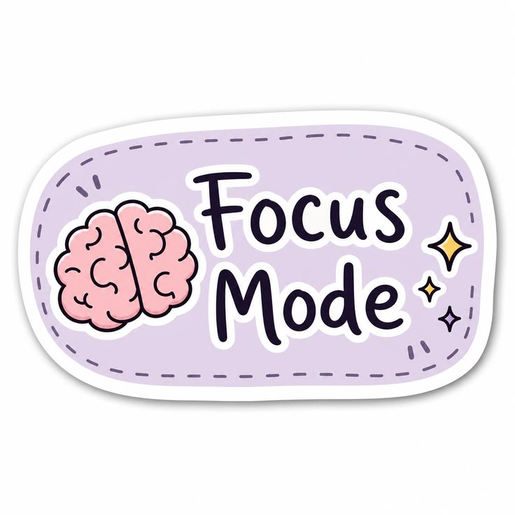

Give your attention to what matters.
التركيز لا يحتاج إلى ساعات طويلة. ابدأ بوقت صغير وركز على مهمة واحدة.
Focus Challenge
اختر مهمة واحدة وحاول العمل عليها لمدة 10 دقائق بدون تصفح الهاتف.
Follow these steps
- Choose one task.
- Put your phone away.
- Focus for 10 minutes.
- Take a short break.

Need a reminder?
لا تحاول أن تكون مثاليًا. مجرد البدء والمحاولة خطوة في الاتجاه الصحيح.
Next Stage →